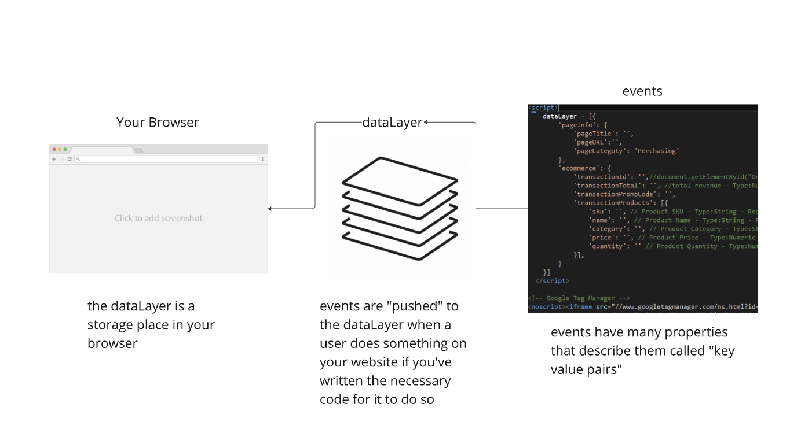
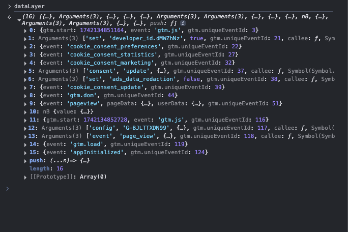

What is the dataLayer?
The dataLayer is another word for "a place to record and store things people do on your website".
Sample of what it looks like when accessed through the browser
These things are stored in the dataLayer that exist in your browser before collected and sent to places like analytics, facebook or elsewhere.
Why the chunky L?
The dataLayer is spelled with a capital L because om something called "camel case with a lowercase first letter" - which essentially means you combine words that would have otherwise been written separately, but in order to make them readable you capitalize the first letter of every word - except for the first one.
- dataLayer
- reallyCoolSomething
- addEventListener
Events = everything people do
Everything users do on your website are registered as events.
Imagine the user landing on your website. This generates a page_view event. They click a button which generates a click event. They add a product to their cart which activates the add_to_cart event.
IF and only IF you have added code to your website that tells it to register those events.
You thus have to add code to your website to create events in the dataLayer.
If the events aren't recorded, they cannot be collected.
Collected via tags
So let's say you have added the code that push a few events to the dataLayer.
Now you can use tags (other small scripts) that tells the browser where to send these events.
If you use Google Tag Manager (or similar alternatives), they make it really easy to add these kinds of tags.
In fact, the dataLayer is a brain-child of the people at Google and something that GTM standardised. Which is nice.
Just remember that it is one place to store things in the browser. But there are several other I'm going to go through on this site.
What to read next